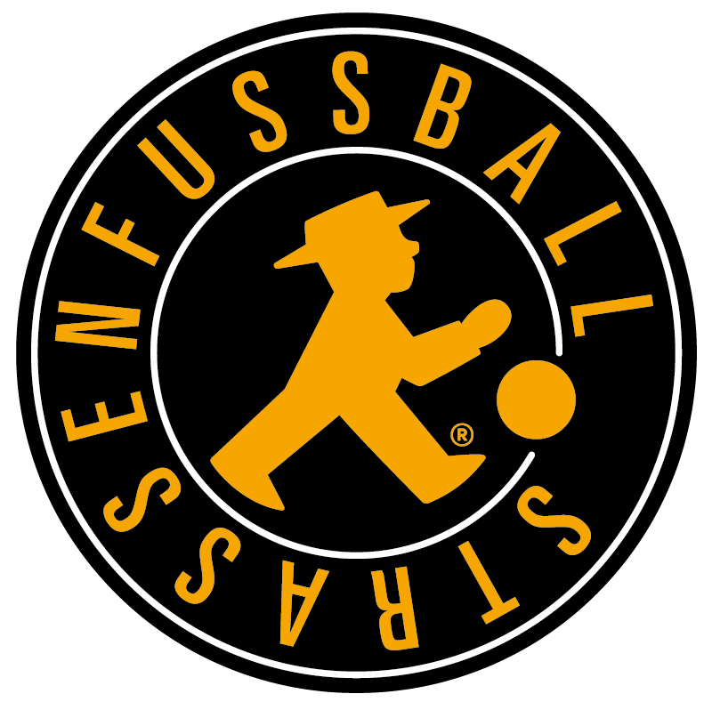

Straßenfußball für Toleranz
Das Projekt „Straßenfußball für Toleranz“ startete erstmals im Jahr 2000 und avancierte schnell zu einem Erfolgsmodell, das inzwischen auch über die Landesgrenzen hinaus einen großen Zuspruch erfährt. Die besonderen Spielregeln stellen ein faires und tolerantes Miteinander in den Vordergrund und fördern zugleich die Mitbestimmung, die Teilhabe und das Verantwortungsbewusstsein junger Menschen. Das Spiel ist offen für alle und ermöglicht einen einfachen Zugang zum Sport. Neben der sportlichen Wertung gibt es zudem eine zusätzliche Fairplay-Wertung. Die notwendigen, auf Fairness basierenden Zusatzregeln werden von den Teams selbst bestimmt. Beim „Straßenfußball für Toleranz“ gibt es keine Schiedsrichter. Stattdessen agieren am Spielfeldrand sogenannte Teamer, die das Spielgeschehen von außen beobachten und nur in Ausnahmesituation eingreifen. Sie werden seitens des Projektes zu Streitschlichtern und Konfliktlotsen ausgebildet und werden nur aktiv, wenn die Teams eventuelle Probleme nicht selber lösen können. Seit 2020 gibt es zusätzlich zu den Teamern die Junior- und Standortmanager/-innen. Die erfahrenen Teamer bekommen damit eine Möglichkeit sich weiterzuentwickeln. Die Brandenburgische Sportjugend veranstaltet alljährlich zahlreiche Straßenfußballturniere, führt verschiedene Bildungsangebote mit der Methode „Straßenfußball für Toleranz“ durch und bildet Jugendliche zu Teamern und Multiplikatoren aus.
News
Hier stehen aktuelle Nachrichten.
Projekte
Die Projekte vorgestellt ...
Termine
Kontakt
Kontaktformular oder E-Mail hier einfügen.